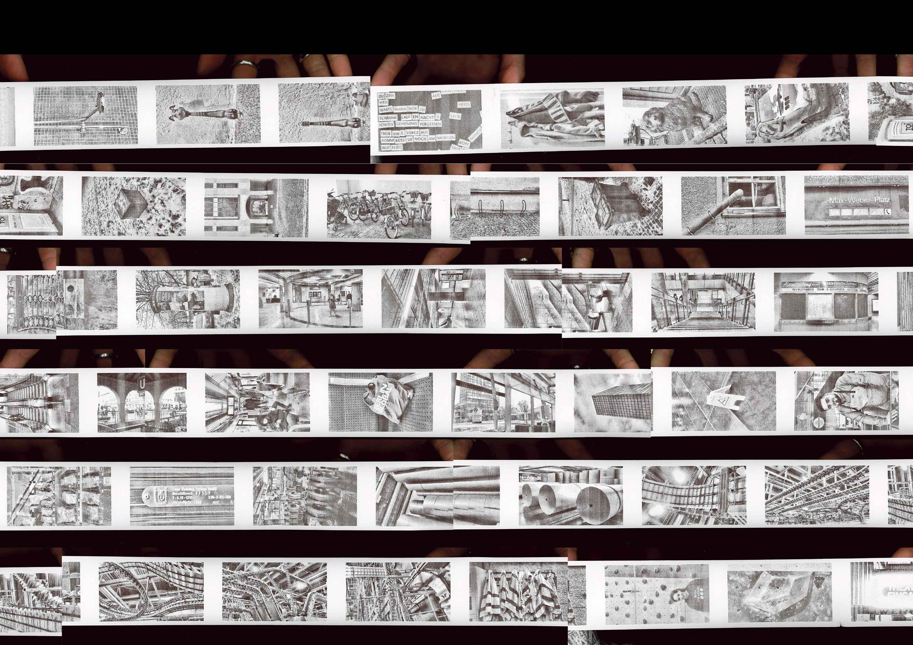
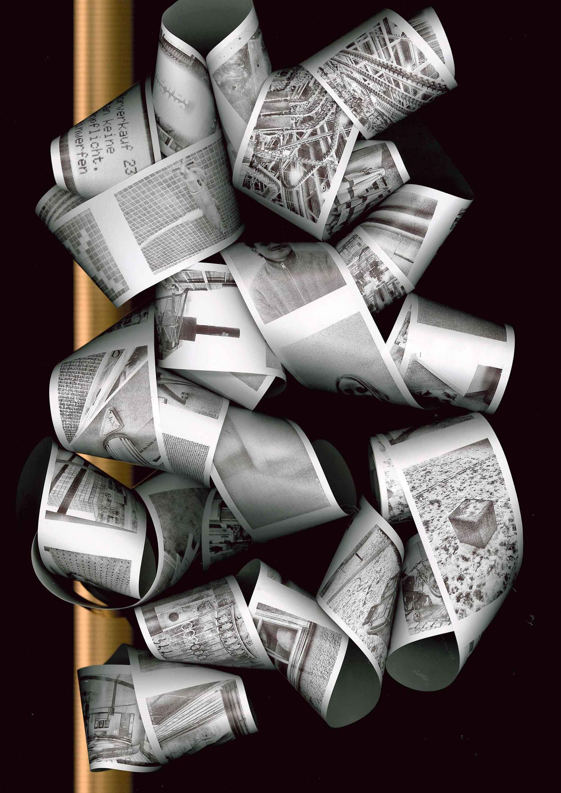

Project
Year
Temporary Archive
2025
Project
Temporary Archive
Year
2025
The Temporary Archive reflects on image production in the post-photographic era, in which the significance of individual photographs threatens to disappear in the omnipresent flood of images. It addresses the paradoxical censorship of essential moments through an overabundance of irrelevance and emphasizes the indistinguishability between relevance and banality. The decision to take all the photographs in one day and print them exclusively on receipt paper points to the ephemeral nature of contemporary visual media. The choice not to use a digital backup underlines the impermanence and fragility of photographic memory in a post-capitalist era defined by image overproduction.